生成时间2026-04-29 16:11:44
帧源raw_world
重复次数1
锁定响应图combined_depth_ir_darkline
峰值诊断图
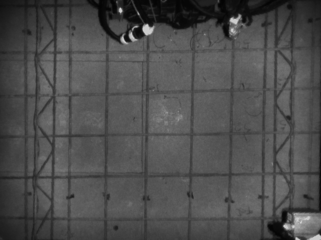
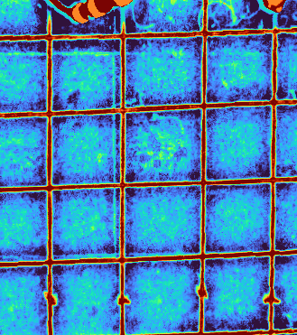
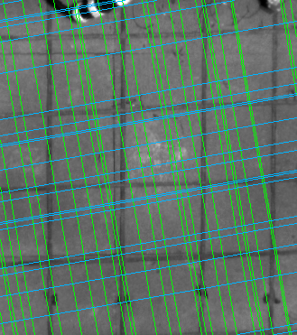
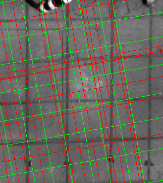
| 工序 | 消融项 | 均值 ms | 中位 ms | 点数 | 平均漂移 px | 最大漂移 px | 点数变化 | 结论 |
|---|---|---|---|---|---|---|---|---|
| 基准 | 全流程 | 749.70 | 749.70 | 45 | 0.00 | 0.00 | 0 | 基准 |
| 连续验证 | 去掉连续钢筋条验证 | 1210.02 | 1210.02 | 45 | 87.02 | 263.15 | 0 | 不能删 |
| 间距筛选 | 去掉 spacing prune | 189.68 | 189.68 | 68 | 133.78 | 244.75 | 23 | 不能删 |
| peak 支撑 | 去掉 peak 支撑过滤 | 1537.16 | 1537.16 | 59 | 80.36 | 266.00 | 14 | 不能删 |
| 局部 refine | 去掉局部峰值 refine | 895.11 | 895.11 | 40 | 129.34 | 187.49 | -5 | 不能删 |
| profile-only | 只保留 profile 周期 + spacing | 372.63 | 372.63 | 37 | 97.55 | 265.42 | -8 | 不能删 |
| profile-only | 只保留 profile 周期原始线 | 69.62 | 69.62 | 330 | 200.33 | 314.46 | 285 | 不能删 |
基准
全流程
保留 peak 支撑、连续钢筋条验证和 spacing prune，是当前直线 PR-FPRG 主链。
基准
mean 749.70 ms
median 749.70 ms
45 points
drift 0.00 / 0.00 px
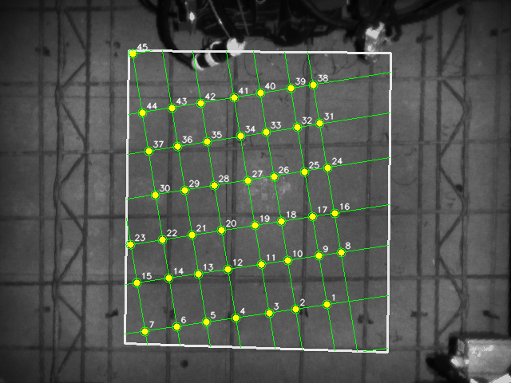
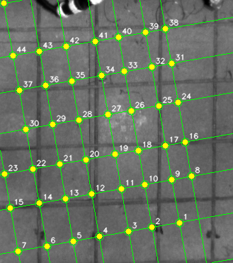
线族明细
[{"angle_deg": 80.0, "line_rhos": [-222.607, -194.386, -155.329, -121.942, -79.988, -42.151, -4.375, 36.764], "peak_rhos": [-316.0, -308.0, -305.0, -253.0, -251.0, -233.0, -223.0, -220.0, -213.0, -194.0, -183.0, -167.0, -160.0, -155.0, -133.0, -122.0, -106.0, -83.0, -80.0, -73.0, -58.0, -42.0, -24.0, -3.0, 7.0, 27.0, 36.0, 46.0, 49.0, 60.0], "continuous_rhos": [-222.607, -219.569, -213.373, -194.386, -182.619, -167.149, -159.083, -155.329, -133.986, -121.942, -106.192, -83.079, -79.988, -73.177, -42.151, -23.754, -4.375, 7.494, 27.177, 36.764, 47.023]}, {"angle_deg": 170.0, "line_rhos": [-416.276, -352.68, -291.431, -242.195, -185.373, -129.377, -80.179, -5.128], "peak_rhos": [-417.0, -410.0, -353.0, -323.0, -300.0, -292.0, -250.0, -244.0, -242.0, -220.0, -210.0, -185.0, -160.0, -158.0, -148.0, -130.0, -80.0, -45.0, -30.0, -24.0, -22.0, -4.0], "continuous_rhos": [-416.276, -352.68, -323.49, -291.431, -250.107, -242.195, -209.997, -185.373, -160.023, -157.672, -147.691, -129.377, -80.179, -44.399, -5.128]}]
连续验证
去掉连续钢筋条验证
rho profile 出线后，不再沿钢筋方向采样检查是否是一整条连续 ridge。
不能删除：速度提升明显，但会多出假线/假点。
mean 1210.02 ms
median 1210.02 ms
45 points
drift 87.02 / 263.15 px
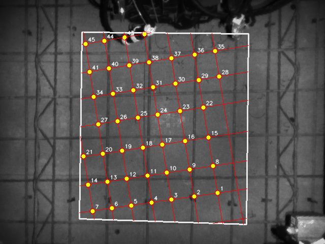
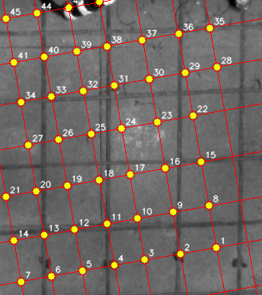
线族明细
[{"angle_deg": 80.0, "line_rhos": [-253.0, -213.0, -167.0, -122.0, -83.0, -42.0, -3.0, 36.0], "peak_rhos": [-316.0, -308.0, -305.0, -253.0, -251.0, -233.0, -223.0, -220.0, -213.0, -194.0, -183.0, -167.0, -160.0, -155.0, -133.0, -122.0, -106.0, -83.0, -80.0, -73.0, -58.0, -42.0, -24.0, -3.0, 7.0, 27.0, 36.0, 46.0, 49.0, 60.0], "continuous_rhos": [-316.0, -308.0, -305.0, -253.0, -251.0, -233.0, -223.0, -220.0, -213.0, -194.0, -183.0, -167.0, -160.0, -155.0, -133.0, -122.0, -106.0, -83.0, -80.0, -73.0, -58.0, -42.0, -24.0, -3.0, 7.0, 27.0, 36.0, 46.0, 49.0, 60.0]}, {"angle_deg": 170.0, "line_rhos": [-410.0, -353.0, -300.0, -244.0, -185.0, -130.0, -80.0, -24.0], "peak_rhos": [-417.0, -410.0, -353.0, -323.0, -300.0, -292.0, -250.0, -244.0, -242.0, -220.0, -210.0, -185.0, -160.0, -158.0, -148.0, -130.0, -80.0, -45.0, -30.0, -24.0, -22.0, -4.0], "continuous_rhos": [-417.0, -410.0, -353.0, -323.0, -300.0, -292.0, -250.0, -244.0, -242.0, -220.0, -210.0, -185.0, -160.0, -158.0, -148.0, -130.0, -80.0, -45.0, -30.0, -24.0, -22.0, -4.0]}]
间距筛选
去掉 spacing prune
保留连续验证结果，不再删除与主间距过近的边缘候选线。
不建议删除：本帧不省时，且可能多线。
mean 189.68 ms
median 189.68 ms
68 points
drift 133.78 / 244.75 px
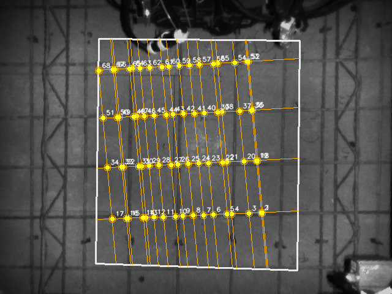
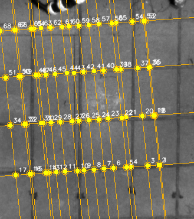
线族明细
[{"angle_deg": 84.0, "line_rhos": [-240.663, -238.433, -219.291, -190.669, -183.69, -161.428, -145.306, -127.94, -111.056, -99.695, -79.58, -63.79, -51.277, -46.48, -21.761, -18.674, 4.947], "peak_rhos": [-312.0, -261.0, -251.0, -241.0, -238.0, -221.0, -219.0, -207.0, -191.0, -186.0, -183.0, -161.0, -145.0, -131.0, -128.0, -111.0, -101.0, -99.0, -80.0, -64.0, -51.0, -46.0, -31.0, -21.0, -19.0, -1.0, 6.0, 24.0, 31.0], "continuous_rhos": [-240.663, -238.433, -219.291, -190.669, -183.69, -161.428, -145.306, -127.94, -111.056, -99.695, -79.58, -63.79, -51.277, -46.48, -21.761, -18.674, 4.947]}, {"angle_deg": 176.0, "line_rhos": [-297.005, -212.747, -130.901, -51.981], "peak_rhos": [-387.0, -297.0, -213.0, -131.0, -52.0, -11.0], "continuous_rhos": [-297.005, -212.747, -130.901, -51.981]}]
peak 支撑
去掉 peak 支撑过滤
周期相位给出的候选线不再要求 profile 局部峰值支撑。
不能删除：可能无法稳定产出两组线族。
mean 1537.16 ms
median 1537.16 ms
59 points
drift 80.36 / 266.00 px
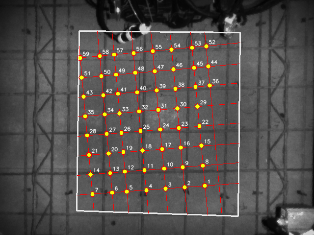
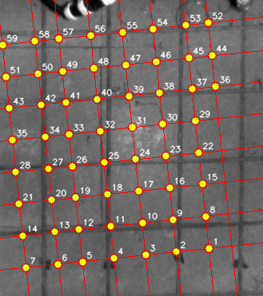
线族明细
[{"angle_deg": 84.0, "line_rhos": [-255.829, -227.084, -185.813, -147.506, -107.669, -67.82, -37.407, 3.245], "peak_rhos": [-317.0, -307.0, -297.0, -287.0, -277.0, -267.0, -257.0, -247.0, -237.0, -227.0, -217.0, -207.0, -197.0, -187.0, -177.0, -167.0, -157.0, -147.0, -137.0, -127.0, -117.0, -107.0, -97.0, -87.0, -77.0, -67.0, -57.0, -47.0, -37.0, -27.0, -17.0, -7.0, 3.0, 13.0, 23.0, 33.0], "continuous_rhos": [-255.829, -247.644, -237.349, -227.084, -197.477, -185.813, -175.625, -147.506, -116.714, -107.669, -97.015, -67.82, -46.879, -37.407, 3.245, 13.313]}, {"angle_deg": 174.0, "line_rhos": [-336.442, -295.881, -255.608, -215.852, -175.801, -135.738, -96.464, -55.522], "peak_rhos": [-396.0, -386.0, -376.0, -366.0, -356.0, -346.0, -336.0, -326.0, -316.0, -306.0, -296.0, -286.0, -276.0, -266.0, -256.0, -246.0, -236.0, -226.0, -216.0, -206.0, -196.0, -186.0, -176.0, -166.0, -156.0, -146.0, -136.0, -126.0, -116.0, -106.0, -96.0, -86.0, -76.0, -66.0, -56.0, -46.0, -36.0, -26.0, -16.0, -6.0], "continuous_rhos": [-397.49, -366.522, -356.737, -346.111, -336.442, -327.116, -305.358, -295.881, -265.833, -255.608, -226.234, -215.852, -185.586, -175.801, -165.316, -156.146, -135.738, -115.201, -106.094, -96.464, -77.161, -66.601, -55.522, -45.668]}]
局部 refine
去掉局部峰值 refine
不把周期线整体平移到附近局部峰值；当前主链默认已跳过此阶段。
可跳过：现场消融 0 漂移，节省少量耗时。
mean 895.11 ms
median 895.11 ms
40 points
drift 129.34 / 187.49 px
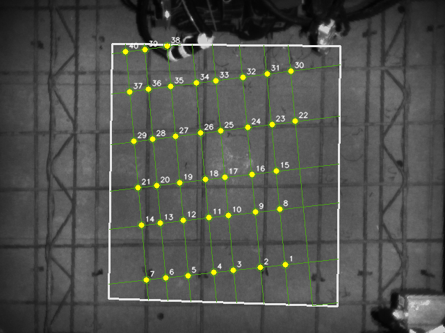
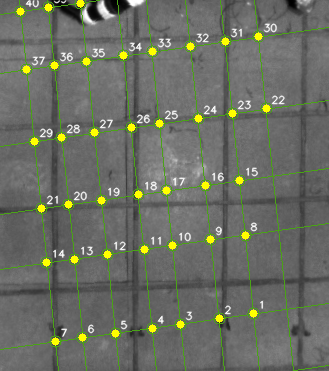
线族明细
[{"angle_deg": 84.0, "line_rhos": [-252.923, -219.291, -184.228, -145.306, -116.714, -79.58, -46.48, -18.674], "peak_rhos": [-312.0, -262.0, -252.0, -246.0, -238.0, -222.0, -219.0, -207.0, -192.0, -186.0, -184.0, -161.0, -145.0, -132.0, -128.0, -117.0, -105.0, -99.0, -82.0, -80.0, -64.0, -46.0, -44.0, -22.0, -19.0, -2.0, 6.0, 24.0, 26.0], "continuous_rhos": [-252.923, -245.016, -238.433, -222.616, -219.291, -191.855, -184.228, -161.428, -145.306, -132.119, -127.94, -116.714, -99.695, -79.58, -63.79, -46.48, -44.4, -18.674, 4.947]}, {"angle_deg": 172.0, "line_rhos": [-407.359, -345.581, -266.358, -211.678, -144.221, -71.977, -13.84], "peak_rhos": [-407.0, -405.0, -353.0, -350.0, -345.0, -313.0, -294.0, -267.0, -265.0, -235.0, -212.0, -153.0, -144.0, -130.0, -105.0, -72.0, -65.0, -23.0, -20.0, -15.0], "continuous_rhos": [-407.359, -404.249, -353.351, -349.46, -345.581, -294.296, -266.358, -235.203, -211.678, -152.256, -144.221, -105.641, -71.977, -65.521, -13.84]}]
profile-only
只保留 profile 周期 + spacing
关闭局部 refine、peak 支撑和连续验证，只保留周期线与 spacing prune。
不能用：速度快，但会产生大量假点。
mean 372.63 ms
median 372.63 ms
37 points
drift 97.55 / 265.42 px
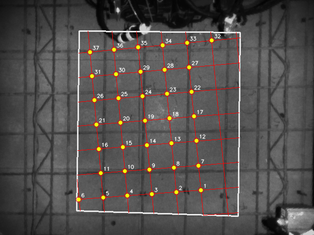
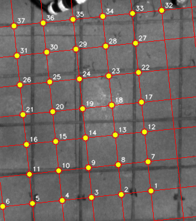
线族明细
[{"angle_deg": 84.0, "line_rhos": [-318.0, -268.0, -218.0, -168.0, -118.0, -68.0, -18.0, 32.0], "peak_rhos": [-318.0, -308.0, -298.0, -288.0, -278.0, -268.0, -258.0, -248.0, -238.0, -228.0, -218.0, -208.0, -198.0, -188.0, -178.0, -168.0, -158.0, -148.0, -138.0, -128.0, -118.0, -108.0, -98.0, -88.0, -78.0, -68.0, -58.0, -48.0, -38.0, -28.0, -18.0, -8.0, 2.0, 12.0, 22.0, 32.0], "continuous_rhos": [-318.0, -308.0, -298.0, -288.0, -278.0, -268.0, -258.0, -248.0, -238.0, -228.0, -218.0, -208.0, -198.0, -188.0, -178.0, -168.0, -158.0, -148.0, -138.0, -128.0, -118.0, -108.0, -98.0, -88.0, -78.0, -68.0, -58.0, -48.0, -38.0, -28.0, -18.0, -8.0, 2.0, 12.0, 22.0, 32.0]}, {"angle_deg": 174.0, "line_rhos": [-395.0, -345.0, -295.0, -245.0, -195.0, -145.0, -95.0, -45.0], "peak_rhos": [-395.0, -385.0, -375.0, -365.0, -355.0, -345.0, -335.0, -325.0, -315.0, -305.0, -295.0, -285.0, -275.0, -265.0, -255.0, -245.0, -235.0, -225.0, -215.0, -205.0, -195.0, -185.0, -175.0, -165.0, -155.0, -145.0, -135.0, -125.0, -115.0, -105.0, -95.0, -85.0, -75.0, -65.0, -55.0, -45.0, -35.0, -25.0, -15.0, -5.0], "continuous_rhos": [-395.0, -385.0, -375.0, -365.0, -355.0, -345.0, -335.0, -325.0, -315.0, -305.0, -295.0, -285.0, -275.0, -265.0, -255.0, -245.0, -235.0, -225.0, -215.0, -205.0, -195.0, -185.0, -175.0, -165.0, -155.0, -145.0, -135.0, -125.0, -115.0, -105.0, -95.0, -85.0, -75.0, -65.0, -55.0, -45.0, -35.0, -25.0, -15.0, -5.0]}]
profile-only
只保留 profile 周期原始线
只根据 theta/rho profile 周期相位生成线，所有后续筛选都关闭。
不能用：最快但假点最多。
mean 69.62 ms
median 69.62 ms
330 points
drift 200.33 / 314.46 px
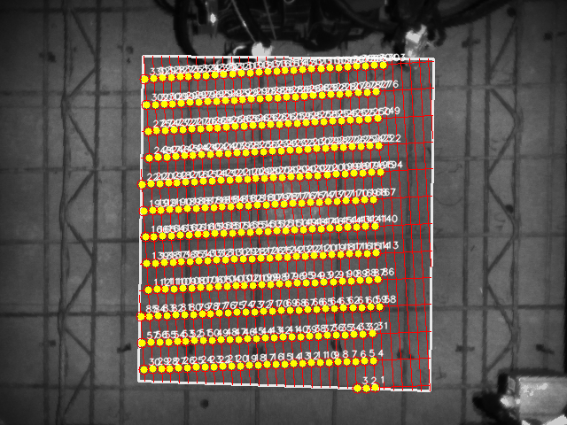
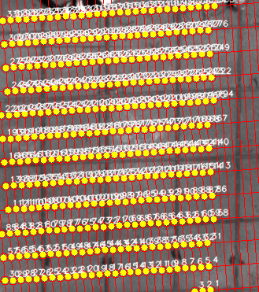
线族明细
[{"angle_deg": 86.0, "line_rhos": [-321.0, -311.0, -301.0, -291.0, -281.0, -271.0, -261.0, -251.0, -241.0, -231.0, -221.0, -211.0, -201.0, -191.0, -181.0, -171.0, -161.0, -151.0, -141.0, -131.0, -121.0, -111.0, -101.0, -91.0, -81.0, -71.0, -61.0, -51.0, -41.0, -31.0, -21.0, -11.0, -1.0, 9.0, 19.0], "peak_rhos": [-321.0, -311.0, -301.0, -291.0, -281.0, -271.0, -261.0, -251.0, -241.0, -231.0, -221.0, -211.0, -201.0, -191.0, -181.0, -171.0, -161.0, -151.0, -141.0, -131.0, -121.0, -111.0, -101.0, -91.0, -81.0, -71.0, -61.0, -51.0, -41.0, -31.0, -21.0, -11.0, -1.0, 9.0, 19.0], "continuous_rhos": [-321.0, -311.0, -301.0, -291.0, -281.0, -271.0, -261.0, -251.0, -241.0, -231.0, -221.0, -211.0, -201.0, -191.0, -181.0, -171.0, -161.0, -151.0, -141.0, -131.0, -121.0, -111.0, -101.0, -91.0, -81.0, -71.0, -61.0, -51.0, -41.0, -31.0, -21.0, -11.0, -1.0, 9.0, 19.0]}, {"angle_deg": 176.0, "line_rhos": [-386.0, -356.0, -326.0, -296.0, -266.0, -236.0, -206.0, -176.0, -146.0, -116.0, -86.0, -56.0, -26.0], "peak_rhos": [-386.0, -356.0, -326.0, -296.0, -266.0, -236.0, -206.0, -176.0, -146.0, -116.0, -86.0, -56.0, -26.0], "continuous_rhos": [-386.0, -356.0, -326.0, -296.0, -266.0, -236.0, -206.0, -176.0, -146.0, -116.0, -86.0, -56.0, -26.0]}]